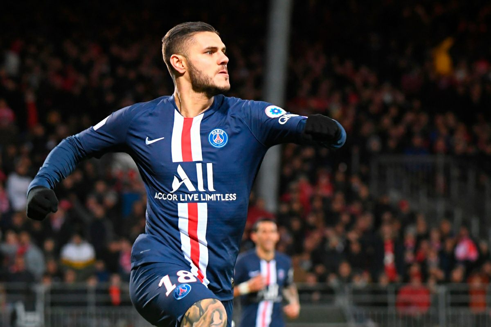
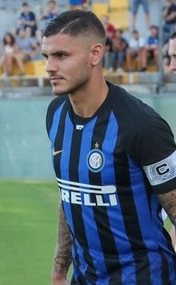

Mauro Icardi (Rosario, Argentina, 19 de febrero de 1993) es un futbolista argentino. Juega como delantero y su equipo actual es el Paris Saint-Germain de la Ligue 1 de Francia. También es internacional con la selección argentina.
Icardi nació en Rosario el 19 de febrero de 1993, y su familia se trasladó a Gran Canaria cuando tenía 9 años. Comenzó su carrera futbolística en la Unión Deportiva Vecindario. En el Vecindario marcó más de 10 goles en las categorías inferiores y fue allí donde recibió su apodo "El Buitre". Desde esos años trabaja con el Agente FIFA canario Abián Morano quien toma las riendas de la carrera de Mauro y decide los pasos en su carrera deportiva y en la gestión de su imagen. A través de este y mediante un video del Torneo Internacional de Arona 2008, fue disputado por FC Barcelona y Real Madrid, después de las ofertas de Valencia CF, Sevilla FC, RCD Español, Deportivo de La Coruña, Arsenal FC y Liverpool FC. El FC Barcelona ganó la carrera de Icardi, firmándolo hasta 2013 con el mejor contrato cadete firmado por un jugador de Canarias y convirtiéndose en la imagen principal del fútbol base español con la marca Adidas. Icardi se unió a las categorías inferiores del Fútbol Club Barcelona en la temporada 2008-09 y fue incluido en la selección de fútbol sub-17 de Argentina. Fue promovido a la sub-19 del equipo la temporada siguiente antes de unirse a la Unione Calcio Sampdoria cedido en enero de 2011. Mauro en sus dos primeras temporadas consiguió el título de máximo goleador. El club catalán se reservó un 15% de opción de cobro sobre el importe recibido en un posible traslado de la U. C. Sampdoria a cualquier otro club.
El 11 de enero de 2011, la Unione Calcio Sampdoria confirmó que Mauro Icardi había firmado con el club en calidad de préstamo hasta el final de la temporada 2010/11. El equipo italiano utilizó la opción de compra de 400 000 € en julio de 2011. En sus primeros 6 meses en la Samp fue máximo goleador del equipo primavera y la temporada 2011/12 volvió a serlo con 19 goles. El 12 de mayo de 2012 marcó su primer gol como profesional frente a la Juve Stabia, dándole el pase matemático a los playoff de ascenso, que finalmente lograría. A finales de agosto fue convocado con la Selección de fútbol sub-20 de Argentina donde participó en el Torneo internacional de fútbol sub-20 de la Alcudia, donde Argentina se proclamó campeona frente a España, y Mauro fue máximo goleador del torneo. El sábado 9 de junio ascendió a la Serie A con la U.C. Sampdoria, donde marcó un gol en el clásico genovés al Génova. El domingo 6 de enero de 2013, con tan solo 19 años, marca dos goles ante la Juventus, partido que la Sampdoria terminaría ganando 2-1 a pesar de permanecer con 10 hombres casi todo el partido debido a la expulsión de Gaetano Berardi. El domingo 27 de enero de 2013, marcó 4 goles contra el Pescara, partido que la Sampdoria terminaría ganando 6-0. En un partido que sirvió para recordar al recién fallecido presidente del club genovés, Riccardo Garrone, los cuatro goles del argentino fueron un gran homenaje. El 10 de febrero le marca un gol a la Roma en la victoria por 3-1 de la Sampdoria, encuentro al que asistiría el seleccionador argentino, Alejandro Sabella, quién estaría siguiendo de cerca el progreso de Icardi y Erik Lamela, de la Roma. Asimismo, el extécnico del Manchester City, Roberto Mancini, estuvo circunstancialmente interesado en integrarlo a los ciudadanos durante los primeros meses de 2013. El 3 de marzo de 2013, en el partido que disputó ante el Parma F.C., Icardi dio la victoria a su equipo con el único gol del partido. El 18 de mayo de 2013 Mauro Icardi le vuelve a marcar a la Juventus en la última jornada de la Serie A, partido que terminó 3-2 con victoria para la Sampdoria. Las actuaciones de Icardi no quedaron inadvertidas en el propio torneo italiano, y al finalizar la temporada con la Sampdoria fue finalmente traspasado al Inter de Milán.
El 11 de julio de 2013 Icardi fue transferido al Inter de Milán por un total de 13 000 000 € para la temporada 2013/14, llevando la camiseta número 9 nerazzurra. La llegada de Mauro Icardi al Inter de Milán ha causado auténtico furor entre los aficionados neroazzurri. El joven delantero procedente de la Sampdoria ha entrado pisando fuerte en el corazón de los fanáticos que ya han convertido a Icardi en uno de sus ídolos del nuevo Inter de Mazzarri. El 18 de agosto de 2013 debuta de manera oficial con la camiseta del Inter de Milán en la Copa Italia contra el AS Cittadella; jugó los 90 minutos pero no marcó en la victoria 4-0. El 14 de septiembre de 2013 Icardi marca su primer gol con la camiseta del Inter de Milán en su segundo partido en la Serie A contra la Juventus de Turín El 29 de septiembre de 2013 Icardi marcó un gol en el empate 1-1 ante el Cagliari Calcio en la Serie A. Pronto comenzó a ser titular y a fuerza de goles recuperó la confianza de su entrenador. El 23 de marzo como titular marcó un gol contra el Atalanta B.C. en la derrota por 2-1. En la jornada 32, frente al Bolonia, marcó un doblete en el empate 2-2. Continuando con su buen momento, en la jornada siguiente visitando a la Sampdoria, su exequipo, marcó un nuevo doblete en la goleada 4-0. El 10 de mayo Icardi metió un gol en la victoria ante la SS Lazio 4-1. El partido tuvo la despedida de su compatriota y compañero Javier Zanetti. Mauro Icardi levantó su nivel en la segunda fase del campeonato de Italia, se afianzo como titular a fuerza de goles y buenas actuaciones, sin embargo el Inter de Milán solo logró el quinto puesto de la Serie A y se clasificó para la UEFA Europa League. El 7 de octubre, Icardi firmó una nueva extensión del contrato con el Inter hasta junio de 2021, con una cláusula de rescisión de 110 millones de euros. Con el nuevo contrato, Icardi ganará 4,5 millones de euros por temporada más bonificaciones diversas basadas en sus actuaciones, objetivos y derechos de imagen. Poco después de firmar el contrato, Icardi declaró: "Estoy muy contento de haber firmado este nuevo contrato que me mantendrá en el club hasta el 2021. Mi sueño es ganar trofeos con este equipo. He oído muchas cosas durante la ventana de transferencia, Como tú siempre haces, pero el club estaba a mi lado, tengo a mi agente y esposa Wanda para agradecer por esta renovación y todos estamos complacidos en casa". Icardi marcó el empate para vencer al Torino por 2 a 1 en San Siro, dándole al Inter su primera victoria en sus últimos cinco partidos. El 28 de noviembre marca un doblete en la victoria 4 a 2 sobre la Fiorentina. El 21 de diciembre vuelve y marca dos goles en la buena victoria 3 a 0 sobre la Lazio. Su primer gol del 2017 lo hace el 14 de enero en la victoria 3 a 1 sobre el ChievoVerona. El 12 de marzo vuelve a marcar un hat-trick en la super goleada 7 a 1 sobre la Atalanta saliendo como una de las figuras del partido. El 22 de abril anotó otro hat-trick, esta vez ante la Fiorentina en la derrota 5-4. En la temporada 2017-18 el delantero marca 11 goles en los primeros 10 jornadas, con tres dobles (contra Fiorentina, Roma y Sampdoria) y un hat-trick contra el Milan (en el derbi ganó 3-2 para Internazionale), tras haber marcado solamente un gol frente a los rossoneri en 9 partidos.
El 2 de septiembre de 2019, el Paris Saint-Germain F. C. anunció su incorporación como cedido hasta el 30 de junio de 2020 con opción de compra. El 1 de octubre anotó su primer gol con el PSG ante el Galatasaray por la Champions league con victoria 1 a 0 en Turquía. Luego se convirtió en una pieza clave, le marcó un doblete por Champions al Brujas en Bélgica con victoria de 5 a 0. También convirtió un doblete ante el Olympique de Marsella con victoria de 4 a 0. Marcó un hat trick en un partido contra el Saint Etienne por la copa de Francia en una victoria por 6 a 1. luego de su buen rendimiento en la temporada, se confirmó que el PSG hizo uso de la opción del delantero argentino por 50 millones de euros, firmando un contrato por cuatro temporadas.